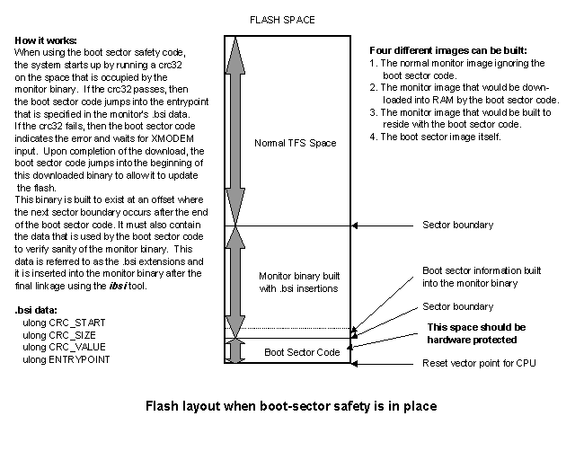

The monitor makes no assumption about the underlying FLASH memory other than the fact that it is broken up into some fixed number of sectors and that there is an algorithm that allows the monitor to write and/or erase data within those sectors. This means that the monitor can be put in a system and there is no immediate need to be concerned with what capabilities the system has to protect its own memory space. It is up to the user to make sure that the monitor is able to work with the capabilities of the system to best protect the flash from undesired corruption. At the one extreme, all flash can be left unprotected and chances are very good that there will never be a problem simply because it's not easy to accidentally reproduce the flash algorithms necessary to cause a write or erasure. At the other extreme, all flash can be write protected and there is no need to ever worry about a corruption problem even if the "evil" code is executed. Obviously there are quite a few different other options between these two and the approach taken is really based on the application. The purpose of this section is to discuss one option that provides the system with the ability to update almost any portion of the flash (monitor or TFS space) without fear of ever losing a system because of some error in the process of the update. For the sake of this discussion the term "losing a system" refers to the situation where the flash update somehow went astray causing the system to no longer boot; this means that the device must come back to the factory for reprogramming.The normal monitor does a good job of detecting a corrupt file in TFS, but does not have the ability to detect corruption within itself; so, if the flash space that is occupied by the monitor is not hardware protected (which it wouldn't be if there were ever a need to update the monitor), then there is the potential of it becoming corrupted and leaving the system in an unrecoverable state. The obvious solution to this would be to hardware protect all of the sectors that are used by the monitor binary; then it would be impossible for the system to trash the flash used by the monitor; unfortunately, this means that the monitor itself could not be updated (this may be an acceptable case, and if so, you're done here!).
If there is a need to occasionally update the monitor in the field, then use of a boot-sector safety is recommended. The system startup is modified slightly such that the monitor does not have initial control of the CPU. The bootsector code runs a crc on the block of space that contains the monitor binary and if it passes, it jumps into the monitor; otherwise, it waits for a new download via XMODEM. In this case, ONLY the sectors used by the boot-sector safety code (typically less than 4K of space) would be hardware protected; hence, all portions of the flash, both monitor and TFS, can be updated and even in the worst case, the system can be rebuilt. Refer to the diagram below...

If the CRC test fails, XMODEM is run by the boot sector code. The boot sector code does not have the ability to write to flash by itself. It will download a binary image to RAM and turn over control to it. That image is expected to contain enough smarts to then allow a complete reburn of the monitor into flash. Typically it would be a version of the monitor built to run in RAM. It can then be used to download a new monitor image and transfer it to flash.The creation of this .bsi data is done with a tool after the final monitor image has been built. It is a post processing stage that is simply put in the makefile after the final linkage. The reset code in the monitor must have this space allocated and the tool, ibsi, is used to insert the data. Refer to ibsi for more details.